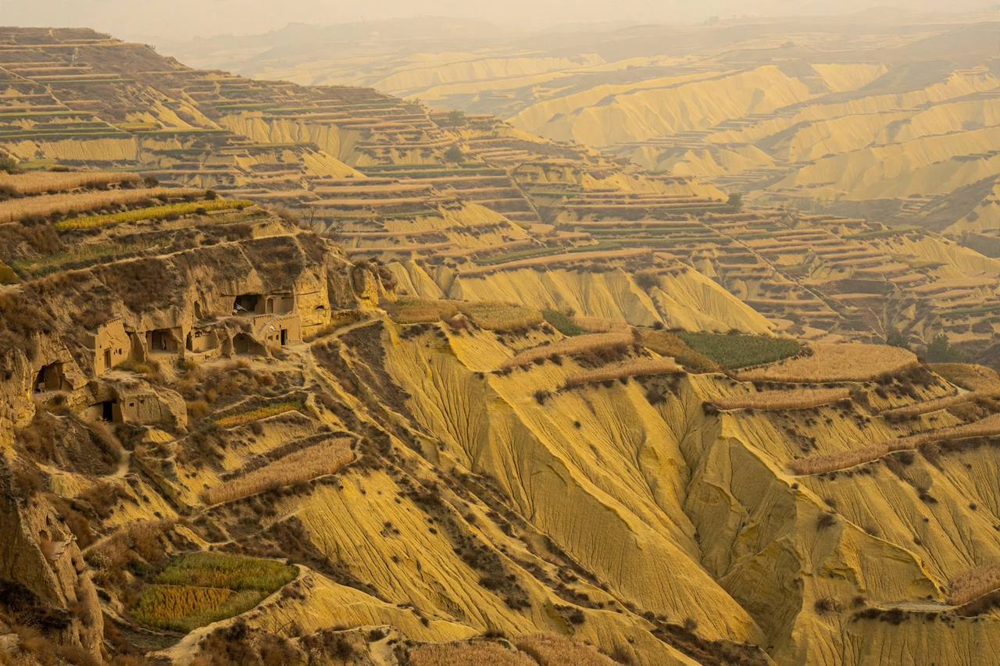

Wikipedia — the free encyclopedia
| Type | Sediment deposit |
| Composition | Wind-blown silt |
| Typical particle size | 0.01–0.05 mm |
| Notable region | Loess Plateau, China |

Loess is a deposit of wind-blown silt that blankets large areas of the Earth's surface, notably in northern China, central North America and eastern Europe. It is typically buff-yellow, porous, and almost entirely lacking in bedding, and it can stand in steep, stable cliffs despite being unconsolidated.
The name comes from the German word Löss, after deposits along the Rhine valley. Loess accumulates where fine glacial or desert dust is carried by wind and settles over thousands of years; deposits on China's Loess Plateau are locally more than 300 metres thick.
Much loess originated during the cold, dry periods of the Pleistocene ice ages, when glaciers ground rock into fine 'rock flour' that winds spread from outwash plains and deserts. Because its grains are loosely packed but slightly cemented, loess soils are fertile and easily worked, which is why loess regions became some of the world's earliest farming heartlands.
The same properties make loess highly erodible. On the Loess Plateau, gully erosion feeds the Yellow River its enormous sediment load — and its name — and cave dwellings (yaodong) have traditionally been excavated into loess cliffs.
Yellow River · China · Desert